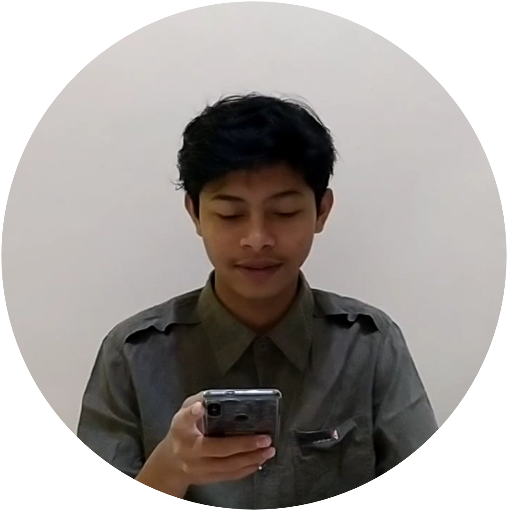

Perkenalkan nama saya Agista Faktur Ryan,biasa dipanggil ryan atau agista.Saya lahir di Lumajang pada tanggal 15 agustus 2003,ya tepat tanggal 15 kemarin saya menginjak umur 17 tahun. Saya merupakan anak ke 4,dari 4 bersaudara.Saya mempunyai dua kakak laki-laki dan satu kakak perempuan,hanya kakak laki-laki nomor 2 yang belum menikah.Saya adalah salah satu murid di SMKN 1 Lumajang,dengan paket keahlian rekayasa perangkat lunak,atau akrab dipanggil RPL.Mungkin bidang ini tidak sesuai dengan hobi saya. Tetapi saya tertarik dengan lapangan pekerjaan yang sangat luas,yang memberikan kesempatan untuk bekerja.hobi saya menggambar/membuat ilustrasi secara tradisional/digital,tetapi saya lebih tertarik dengan rekayasa perangkat lunak. Rumah saya beralamatkan di JL.Lamongan no 11 rw4/rt14 atau jalan menuju kebonagung.
Definisi
Menurut saya menggambar merupakan suatu hal/kegiatan yang digunakan untuk mengisi waktu luang dan pengekspresian diri,dan kegiatan tersebut menuru saya sangat menyenangkan. definisi menggambar secara umum yaitu aktivitas kreatif untuk membentuk imaji/gambar yang menyampaikan gagasan, ide, serta simbol sebagai salah satu bentuk ekspresi menggunakan berbagai teknik guratan dan alat gambar yang beranekaragam. Saya mulai menyukai kegiatan menggabar sejak saat saya masih duduk dibangku sekolah dasar.Tanpa sadar saya seperti tidak pernah lepas dari kegiatan tersebut entah disaat jam kosong,saat pelajaran.
Manfaat
1.Alat bercerita.
2.Menggambar melatih mengutarakan pendapat, mulai pendapat yang nyata (lugas) sampai simbol yang merupakan ide/angan-angan yang tidak dapat diungkapkan lewat kata-kata.
3.Menggambar sebagai media mencurahkan perasaan.
4.Alat bermain, Cerita tentang telur memberikan arti bahwa kejadian tsb. Melatih anak untuk mengungkapkan pengalaman yang cukup lama terjadi.
5.Melatih ingatan.
6.Menggambar melatih berpikir komprehensif (menyeluruh).
7.Menggambar sebagai media sublimasi perasaan, Kehidupan perasaan dan pikiran anak usia 3-5 th masih menyatu.
8.Menggambar melatih keseimbangan, Susunan gambar, figur, benda/objek pada gambar anak mempunyai komposisi yang tepat.
9.Menggambar mengembangkan kecakapan emosional
10.Menggambar melatih ketelitian melalui pengamatan langsung, Pembelajaran pendidikan seni rupa (menggambar)
Gambar digital adalah gambar yang dihasilkan dari proses/dari oleh gambar dikomputer, kamera, scanner atau perangkat elektronik lainnya. Pemotretan menggunakan kamera digital atau media lain yang disimpan dalam bentuk file.Gambar digital terbagi dua jenis, yaitu gambar jenis bitmap dan gambar jenis vektor.GAMBAR BITMAP merupakan duplikat dari gambar asli dalam bentuk gambar digital.
Kelebihan Gambar Bitmap: Gambar Mampu menangkap nuansa warna dan bentuk yang natural Lebih cepat dan lebih sesuai untuk ditampilkan ke layar monitor Kekurangan Gambar Bitmap:
perubahan ukuran gambar mempengaruhi kualitas gambar ukuran file gambar relatif besar melakukan kompresi pada gambar maka kualitas gambar akan menurun Program Aplikasi Pengolah Gambar Bitmap: Adobe Photoshop, Corel Photopaint, dan GIMP
GAMBAR VEKTOR merupakan gambar yang tersusun oleh sekumpulan garis, kurva dan bidang tertentu.
Kelebihan Gambar Vektor: Bersifat scalable, artinya kita dapat memperbesar atau memperkecil gambar tanpa mengubah kualitasnya Mempunyai warna-warna yang solid, cocok untuk bentuk-bentuk gambar sederhana, seperti logo, kartun, dan sebagainya Memilki ukuran file yang kecil Kekurangan Gambar Vektor:
Hasil gambar tidak natural Kurang dapat menampilkan dengan gradasi rumit Program Aplikasi Pengolah Gambar Vektor:
Gambar vektor dapat dibuat dengan program aplikasi desain grafis untuk gambar vektor seperti CorelDraw, Macromedia Freehand, Macromedia Flash, Dia dan Inkscape
Gambar Non Digital adalah gambar yang dihasilkan melalui proses sketsa/guratan alat gambar kesuatu media kertas, kanvas, dan sebagainya yang berada diluar lingkungan media digital (kamera, scanner dan perangkat elektronik lainnya).
contoh gambar nondigital yaitu menggunakan kertas,canvas,pensil,dan lain sebagainya.